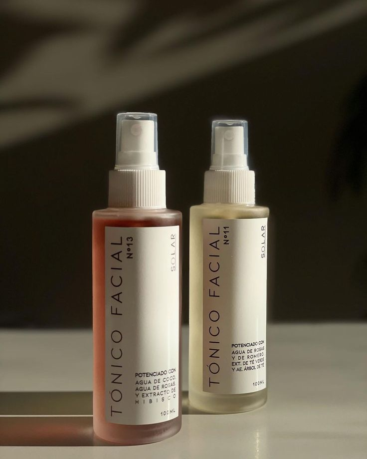

Importancia
El cuidado facial es importante no solo por fines estéticos, si no también
porque es una práctica higiénica que sirve para prevenir diferentes
tipos de daños a la piel y enfermedades dermatológicas, algunas
por ejemplo: acné, rosácea, irritaciones, dermatitis, manchas,
daños ocasionados por el sol, entre otras.
Tips que puedes usar para tener una piel sana.
1. Transforma en un hábito la higiene diaria de tu rostro.
Es importante limpiar la cara dos veces al día por la
mañana y antes de acostarte-, con el fin de eliminar
toxinas.
Para que esta limpieza sea efectiva y no agresiva,
debes utilizar productos especiales para el rostro.
2. Protégete del sol
Una de las formas más importantes de cuidar tu piel
es protegerla del sol.
La exposición al sol durante toda la vida puede causar
arrugas, manchas de la edad y otros problemas de la piel
y aumentar el riesgo de cáncer de piel.
3. Trata tu piel con suavidad
La limpieza y el afeitado diarios pueden dañar la piel.
Para tratarla con suavidad:
* Limita la duración del baño.
El agua caliente y las duchas o baños prolongados
eliminan los aceites naturales de la piel.
* Evita los jabones fuertes.
Los jabones y detergentes fuertes pueden eliminar
los aceites naturales de la piel.
En su lugar, procura usar limpiadores suaves.
* Sécate con golpecitos.
Después de lavarte o bañarte, sécate la piel suavemente
con una toalla dando pequeños toques para que quede
algo de humedad en la piel.
4. Lleva una dieta saludable.
Una dieta saludable puede ayudarte a verte y sentirte mejor.
5. Controla el estrés.
Si no se controla el estrés, la piel puede volverse más sensible,
lo que provoca puede provocar acné y otros problemas de la piel.
Controla el estrés para promover una piel saludable.
Duermir lo suficiente, establezcer límites razonables, recortar la
lista de tareas pendientes y dedicar tiempo a las cosas que disfrutas,
puede ayudarte a controlar el estres.
Productos que puedes usar para tus rutinas de skincare
1. Agua micelar.
Está retira las partículas de suciedad, grasa,
maquillaje y sebo del rostro. Limpia de manera
profunda sin dañar o resecar la piel. Puede usarse
por la mañana y por la noche.
2. Tónico.
Éste ayuda a cerrar los poros y equilibrar la piel
para el tratamiento posterior.
Se puede utilizar por la mañana y por la noche.

3. Crema para el contorno de ojos.
Mejora la circulación y equilibra el hídrico de la piel,
además de fortalecer el tejido y mejorar la microcirculación.

4. Sérum
Ayuda a unificar la piel, combate las líneas finas,
los poros abiertos o dilatados y la fatiga.
Existen muchos tipos de sueros y
cada uno puede ayudarte con diferentes cosas.
5. Crema hidratante.
Evitan la deshidratación de la piel.
6. Protector solar
Protege contra los rayos UVB, pero debes asegurarte
de que protege también contra la radiación UVA.
Debe usarse por la mañana.

7. Hidratante de labios
Estos protegen, nutren y reparan la piel de los labios.
Tip extra
También puedes usar un rodillo de cuarzo y un gua sha en tu rutinas
con los que puedes masajear tu rostro para obtener beneficios
como un rostro mas iluminado y tonificados, ya que estos ayudan
a oxigar, a tener una mejor circulacion y a liberar tensiones.
También no te olvides de tomar agua.
El agua mantiene la piel hidratada y te ayuda a eliminar toxinas.
Por si fuera poco, contiene nutrientes, vitaminas y minerales
excelentes para la piel como el calcio, el magnesio y el sodio.
 @Care_Mx
@Care_Mx